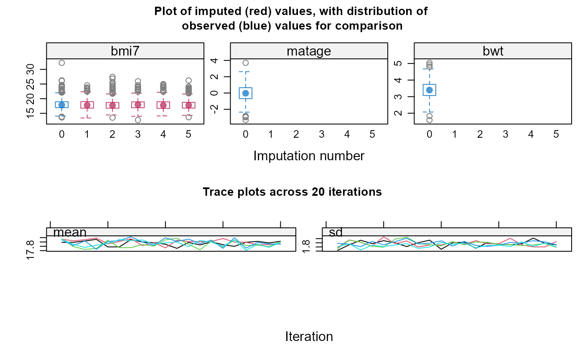

Multiple Imputation DOCtor (midoc)
Elinor Curnow, Jon Heron, Rosie Cornish, Kate Tilling, and James Carpenter
midoc.rmdAbout midoc
Missing data is a common issue in health and social research, often addressed by multiple imputation (MI). MI is a flexible and general approach, with a suite of software packages. However, using MI in practice can be complex. Application of MI involves multiple decisions which are rarely justified or even documented, and for which little guidance is available.
The Multiple Imputation DOCtor (midoc) R package is a
decision-making system which incorporates expert, up-to-date guidance to
help you choose the most appropriate analysis method when there are
missing data. midoc will guide you through your analysis,
examining both the hypothesised causal relationships and the observed
data to advise on whether MI is needed, and if so how to perform it.
midoc follows the framework for the treatment and reporting
of missing data in observational studies (TARMOS) 1. We assume
you are interested in obtaining unbiased estimates of regression
coefficients - note that bias is not necessarily a concern if your
interest is in prediction (i.e. diagnostic/prognostic
modelling).
Here, we will demonstrate the key features of midoc
using a worked example.
In this example, we wish to estimate the association between maternal
age at first pregnancy (our exposure) and child’s body mass index (BMI)
at age 7 years (our outcome). For simplicity, we only consider one
confounder of the relationship between maternal age and BMI at age 7
years, maternal education level. Note that simulated data for this study
are included in the midoc package in the bmi
dataset. The dataset contains 1000 observations, with realistic values
for each variable, and exaggerated relationships between variables (to
highlight the consequences of our choice of analysis approach).
Note An interactive version of this vignette:
Multiple Imputation DOCtor (midoc) Shiny version is also
available to run locally (you can run this using the midoc
command midocVignette()). In the interactive version, you
can apply features of midoc described here using your own
DAG and data.
You can also explore midoc functions interactively using
the (browser-based) midoc Shiny
app.
Step 1 Specify the analysis and missingness models using a directed acyclic graph
First, we will construct a causal diagram, or directed acyclic graph (DAG) for our example, using syntax as per the dagitty package.
We will start by specifying the relationships between our variables, assuming there are no missing data.
We will assume maternal age (matage) causes BMI at age 7
years (bmi7), and maternal education level
(mated) causes both maternal age and BMI at age 7 years. We
can express these relationships using “dagitty” syntax, as follows:
matage -> bmi7
mated -> matage
mated -> bmi7Next, for each partially observed variable, we will specify the variables related to its probability of being missing (its “missingness”) by adding these relationships to our DAG. This type of DAG is often referred to as a “missingness” DAG (mDAG) 2, 3.
We will first use the midoc function
descMissData to identify which variables in our dataset are
partially observed, specifying our outcome (y), covariates,
i.e. our independent variables, (covs), and
dataset (data), as follows.
descMissData(y="bmi7",
covs="matage mated",
data=bmi)[[1]]
pattern bmi7 matage mated n pct
[1,] 1 1 1 1 592 59
[2,] 2 0 1 1 408 41We see that there are two missing data patterns: either all variables
are observed, or BMI at age 7 years is missing and all covariates are
observed. We will use indicator variable “R” to denote the missingness
of BMI at age 7 years (for example, R=1 if BMI at age 7 years is
observed, and 0 otherwise). In this specific example, R also indicates a
complete record (R=1 if all variables are fully observed, and 0
otherwise) because all other variables are fully observed. We will
suppose that R is related to maternal education level via socio-economic
position (SEP), i.e. SEP is a cause of both maternal education
level and R, but neither BMI at age 7 years itself nor maternal age are
causes of R. We will further suppose that SEP is missing (unmeasured)
for all individuals in our dataset; to remind us of this fact, we will
name this variable sep_unmeas.
Our mDAG is now as follows (note that we follow the convention of using lower case names for variables in our code, so R becomes “r”, and so on):
matage -> bmi7
mated -> matage
mated -> bmi7
sep_unmeas -> mated
sep_unmeas -> rNote that if instead you believe maternal education is a direct cause of R, the mDAG would be as follows:
matage -> bmi7
mated -> matage
mated -> bmi7
mated -> rWe will now draw our mDAG and visually check that the relationships are specified as we intended:
Note We have used additional commands to specify the
layout of the mDAG shown below - although this is not necessary when
using midoc, go to the dagitty website if you would like to find
out more about using “dagitty” to draw mDAGs.

As a final check of our mDAG, we will use the midoc
function exploreDAG to explore whether relationships in the
dataset are consistent with the proposed mDAG, specifying both our mDAG
(mdag) and dataset (data), as follows.
exploreDAG(mdag="matage -> bmi7
mated -> matage
mated -> bmi7
sep_unmeas -> mated
sep_unmeas -> r",
data=bmi)The proposed directed acyclic graph (DAG) implies the following pairs
of variables are (conditionally) independent (where, for example, 'X
_||_ Y | Z' should be read as 'X is independent of Y conditional on
Z'). Note that variable names are abbreviated. Consider whether these
(conditional) independencies are plausible for your study, and update
your DAG accordingly:
bmi7 _||_ r | sp_n
bmi7 _||_ r | matd
bmi7 _||_ sp_n | matd
matg _||_ r | sp_n
matg _||_ r | matd
matg _||_ sp_n | matd
matd _||_ r | sp_n
These (conditional) independence statements are explored below using
the canonical correlations approach for mixed data. See
??dagitty::localTests for further details. Results are shown for
variables that are fully observed in the specified dataset. The null
hypothesis is that the stated variables are (conditionally)
independent.
estimate p.value 2.5% 97.5%
matage _||_ r | mated 0.02998323 0.343547 -0.03206946 0.09180567
Interpretation: A small p-value means the stated variables may not be
(conditionally) independent in the specified dataset: your data may not
be consistent with the proposed DAG. A large p-value means there is
little evidence of inconsistency between your data and the proposed
DAG.
Note that there may also be other DAGs which your data are consistent
with. Also note that these results assume that relationships between
variables are linear. Consider exploring the specification of each
relationship in your model. Also consider whether it is valid and
possible to explore relationships between partially observed variables
using the observed data, e.g. avoiding perfect prediction.Based on the relationships between fully observed variables maternal
age, maternal education, and missingness of BMI at age 7 years, we can
see that there is little evidence of inconsistency between our dataset
and proposed mDAG. In particular, our mDAG assumes that maternal age
(matage) is unrelated to missingness of BMI at age 7 years
(r), given maternal education (mated); our
results suggest this is plausible. Note that we cannot use our observed
data to determine whether BMI at age 7 years is unrelated to its own
missingness - we would need the missing values of BMI at age 7 years in
order to do this. However, if BMI at age 7 years was a cause of its own
missingness, then we would expect maternal age also to be related to its
missingness (via BMI at age 7 years). Since maternal age seems to be
unrelated, we are reassured that BMI at age 7 years is also likely to be
unrelated, given maternal education.
Tips for specifying a “missingness” DAG
First specify the DAG for the analysis model, as it would be if there were no missing data. You may find this introduction to DAGs useful 4.
Next add missingness indicator(s) to your DAG. If you have multiple variables with missing data, you may want to start by including just the complete records indicator in your DAG.
-
Identify variables related to missingness using:
Subject-matter knowledge, for example, prior research on causes of drop-out in your study and knowledge of the data collection process
Data exploration, for example, by performing a logistic regression of each missingness indicator on your analysis model variables - noting that you may have to exclude any variables with a large proportion of missing data to avoid perfect prediction
Step 2 Check whether complete records analysis is likely to be a valid strategy
Our next step is to determine whether complete records analysis (CRA) is a valid strategy, using our mDAG. Remember that, in general, CRA will be valid if the analysis model outcome is unrelated to the complete records indicator, conditional on the analysis model covariates 5 (in special cases, depending on the type of analysis model and estimand of interest, this rule can be relaxed 6 - here, we will consider the general setting without making any assumptions about the fitted model).
Suppose we decide to estimate the unadjusted association between BMI
at age 7 years and maternal age, without including our confounder
maternal education in the model. We will use the midoc
function checkCRA applied to our mDAG to check whether CRA
is valid for this model, specifying our outcome (y),
covariates, i.e. our independent variables,
(covs), complete records indicator (r_cra),
and mDAG (mdag), as follows:
checkCRA(y="bmi7",
covs="matage",
r_cra="r",
mdag="matage -> bmi7
mated -> matage
mated -> bmi7
sep_unmeas -> mated
sep_unmeas -> r")Based on the proposed directed acyclic graph (DAG), the analysis model
outcome and complete record indicator are not independent given
analysis model covariates. Hence, in general, complete records analysis
is not valid.
In special cases, depending on the type of analysis model and estimand
of interest, complete records analysis may still be valid. See, for
example, Bartlett et al. (2015) (https://doi.org/10.1093/aje/kwv114)
for further details.
Consider using a different strategy e.g. multiple imputation, or a
different analysis model, noting that a different analysis model may
not be aligned with your estimand.
For example, the analysis model outcome and complete record indicator
are independent given each of the following sets of variables:
mated
c("matage", "mated")
sep_unmeas
c("matage", "sep_unmeas")
c("mated", "sep_unmeas")
c("matage", "mated", "sep_unmeas")We can see that CRA would not be valid (we can also tell this by
inspecting our DAG: there is an open path from bmi7 to
r via mated and sep_unmeas if we
only condition on matage). checkCRA suggests
that CRA would be valid if we included mated, or
mated and sep_unmeas, in the analysis model.
In this particular setting, it is sensible to include mated
in the analysis model since it is a confounder of the relationship
between matage and bmi7. In other settings, we
might not want to include the variables required for valid CRA in our
model because they might change its interpretation - in that case, we
would need to use a different analysis strategy. Note that
sep_unmeas is not related to bmi7 once we
condition on mated (though it is still related to
missingness of bmi7), so does not need to be included in
our analysis model.
If we add mated to the model and re-run
checkCRA, as below, we see that CRA is now valid.
checkCRA(y="bmi7",
covs="matage mated",
r_cra="r",
mdag="matage -> bmi7
mated -> matage
mated -> bmi7
sep_unmeas -> mated
sep_unmeas -> r")Based on the proposed directed acyclic graph (DAG), the analysis model
outcome and complete record indicator are independent given analysis
model covariates. Hence, complete records analysis is valid.Note If our outcome, BMI at age 7 years, was itself
a cause of missingness, CRA would always be invalid, i.e. there
would be no other variables we could add to the analysis model to make
CRA valid. See below to see the results of checkCRA in this
case (note, in the code, we have added a path from bmi7 to
r to the specified mDAG).
checkCRA(y="bmi7",
covs="matage mated",
r_cra="r",
mdag="matage -> bmi7
mated -> matage
mated -> bmi7
sep_unmeas -> mated
sep_unmeas -> r
bmi7 -> r")Based on the proposed directed acyclic graph (DAG), the analysis model
outcome and complete record indicator are not independent given
analysis model covariates. Hence, in general, complete records analysis
is not valid.
In special cases, depending on the type of analysis model and estimand
of interest, complete records analysis may still be valid. See, for
example, Bartlett et al. (2015) (https://doi.org/10.1093/aje/kwv114)
for further details.
Consider using a different strategy e.g. multiple imputation.Step 3 Check whether multiple imputation is likely to be a valid strategy
Although CRA is valid for our example, we may also wish to perform MI. Remember that MI is valid in principle if each partially observed variable is unrelated to its missingness, given its imputation model predictors. Furthermore, we should include all other analysis model variables in the imputation model for each partially observed variable, in the form implied by the analysis model, so that the analysis and imputation models are “compatible”. In theory, given multiple partially observed variables, validity of MI may imply different causes of missingness for each missing data pattern. For example, if both BMI at age 7 years and maternal education were partially observed, MI would only be valid if missingness of BMI at age 7 years was unrelated to maternal education among individuals missing both BMI at age 7 years and maternal education (given the other observed data). Missingness of BMI at age 7 years could be related to maternal education among individuals with observed maternal education. In practice, we recommend focusing on the most common missing data patterns and/or variables with the most missing data. Less common missing data patterns can often be assumed to be missing completely at random - it is unlikely to change your final conclusions if this assumption is incorrect.
In our example, we only have a single partially observed variable
(BMI at age 7 years), so it is relatively simple to check the validity
of MI based on our mDAG. We have already verified (using
checkCRA) that BMI at age 7 years is unrelated to its
missingness, given maternal age and maternal education. Therefore, we
know that MI will be valid if we use only these variables in the
imputation model for BMI at age 7 years (because the analysis model and
the imputation model are exactly the same in this case). However, MI
using just maternal age and maternal education in the imputation model
for BMI at age 7 years will recover no additional information compared
to CRA. Therefore, we may wish to include “auxiliary variables” in our
imputation model for BMI at age 7 years. These are additional variables
that are included as predictors in the imputation model but that are not
required for the analysis model. If we choose auxiliary variables that
are predictive of BMI at age 7 years, we can improve the precision of
our MI estimate - reduce its standard error - compared to the CRA
estimate.
In our example, we have two variables that could be used as auxiliary
variables: pregnancy size - singleton or multiple birth -
(pregsize) and birth weight (bwt). We will
inspect the missing data patterns in our dataset once again using
descMissData, including our auxiliary variables.
descMissData(y="bmi7",
covs="matage mated pregsize bwt",
data=bmi)[[1]]
pattern bmi7 matage mated pregsize bwt n pct
[1,] 1 1 1 1 1 1 592 59
[2,] 2 0 1 1 1 1 408 41We can see that our auxiliary variables are fully observed.
We assume that pregnancy size is a cause of BMI at age 7 years, but not its missingness. We assume birth weight is related to both BMI at 7 years (via pregnancy size) and its missingness (via SEP). We will now add these variables to our mDAG. Below, we have shown our updated mDAG.

We will also once again explore whether relationships in the dataset
are consistent with the updated mDAG using exploreDAG, as
follows.
exploreDAG(mdag="matage -> bmi7
mated -> matage
mated -> bmi7
sep_unmeas -> mated
sep_unmeas -> r
pregsize -> bmi7
pregsize -> bwt
sep_unmeas -> bwt",
data=bmi)The proposed directed acyclic graph (DAG) implies the following pairs
of variables are (conditionally) independent (where, for example, 'X
_||_ Y | Z' should be read as 'X is independent of Y conditional on
Z'). Note that variable names are abbreviated. Consider whether these
(conditional) independencies are plausible for your study, and update
your DAG accordingly:
bmi7 _||_ bwt | prgs, sp_n
bmi7 _||_ bwt | matd, prgs
bmi7 _||_ r | sp_n
bmi7 _||_ r | matd
bmi7 _||_ sp_n | matd
bwt _||_ matg | matd
bwt _||_ matg | sp_n
bwt _||_ matd | sp_n
bwt _||_ r | sp_n
matg _||_ prgs
matg _||_ r | sp_n
matg _||_ r | matd
matg _||_ sp_n | matd
matd _||_ prgs
matd _||_ r | sp_n
prgs _||_ r
prgs _||_ sp_n
These (conditional) independence statements are explored below using
the canonical correlations approach for mixed data. See
??dagitty::localTests for further details. Results are shown for
variables that are fully observed in the specified dataset. The null
hypothesis is that the stated variables are (conditionally)
independent.
estimate p.value 2.5% 97.5%
bwt _||_ matage | mated 0.05018898 0.1127099 -0.01184095 0.11183410
matage _||_ pregsize 0.03029139 0.3386080 -0.03176134 0.09211150
matage _||_ r | mated 0.02998323 0.3435470 -0.03206946 0.09180567
mated _||_ pregsize 0.01594976 0.6144181 -0.04608889 0.07786585
pregsize _||_ r 0.01482015 0.6397174 -0.04721631 0.07674273
Interpretation: A small p-value means the stated variables may not be
(conditionally) independent in the specified dataset: your data may not
be consistent with the proposed DAG. A large p-value means there is
little evidence of inconsistency between your data and the proposed
DAG.
Note that there may also be other DAGs which your data are consistent
with. Also note that these results assume that relationships between
variables are linear. Consider exploring the specification of each
relationship in your model. Also consider whether it is valid and
possible to explore relationships between partially observed variables
using the observed data, e.g. avoiding perfect prediction.Our results suggest that our updated mDAG is plausible.
Note that CRA is still valid for our updated mDAG. We can check this
using checkCRA once more:
checkCRA(y="bmi7",
covs="matage mated",
r_cra="r",
mdag="matage -> bmi7
mated -> matage
mated -> bmi7
sep_unmeas -> mated
sep_unmeas -> r
pregsize -> bmi7
pregsize -> bwt
sep_unmeas -> bwt")Based on the proposed directed acyclic graph (DAG), the analysis model
outcome and complete record indicator are independent given analysis
model covariates. Hence, complete records analysis is valid.We will now use the midoc function checkMI
applied to our DAG to check whether MI is valid when the imputation
model predictors for BMI at age 7 years include pregnancy size or birth
weight, as well as maternal age and maternal education. We will specify
the partially observed variable (dep), predictors
(preds), missingness indicator for the partially observed
variable (r_dep), and mDAG (mdag).
We will first consider the imputation model including pregnancy size. The results are shown below. These suggest that MI would be valid in principle if we included pregnancy size as well as the other analysis model variables in the imputation model for BMI at age 7 years.
checkMI(dep="bmi7",
preds="matage mated pregsize",
r_dep="r",
mdag="matage -> bmi7
mated -> matage
mated -> bmi7
sep_unmeas -> mated
sep_unmeas -> r
pregsize -> bmi7
pregsize -> bwt
sep_unmeas -> bwt")Based on the proposed directed acyclic graph (DAG), the incomplete
variable and its missingness indicator are independent given imputation
model predictors. Hence, multiple imputation methods which assume data
are missing at random are valid in principle.We will next consider the imputation model including birth weight.
The results are shown below. These suggest that MI would not be valid if
we included birth weight as well as the other analysis model variables
in the imputation model for BMI at age 7 years. We can also tell this by
inspecting our mDAG: since bwt shares a common cause with
both bmi7 and r, it is a “collider”, and hence
conditioning on bwt opens a path from bmi7 to
r via bwt.
checkMI(dep="bmi7",
preds="matage mated bwt",
r_dep="r",
mdag="matage -> bmi7
mated -> matage
mated -> bmi7
sep_unmeas -> mated
sep_unmeas -> r
pregsize -> bmi7
pregsize -> bwt
sep_unmeas -> bwt")Based on the proposed directed acyclic graph (DAG), the incomplete
variable and its missingness indicator are not independent given
imputation model predictors. Hence, multiple imputation methods which
assume data are missing at random are not valid.
Consider using a different imputation model and/or strategy (e.g.
not-at-random fully conditional specification). For example, the
incomplete variable and its missingness indicator are independent if
each of the following sets of variables are used as predictors in the
imputation model:
mated
c("matage", "mated")
c("mated", "pregsize")
c("bwt", "mated", "pregsize")
c("matage", "mated", "pregsize")
c("bwt", "matage", "mated", "pregsize")
sep_unmeas
c("bwt", "sep_unmeas")
c("matage", "sep_unmeas")
c("bwt", "matage", "sep_unmeas")
c("mated", "sep_unmeas")
c("bwt", "mated", "sep_unmeas")
c("matage", "mated", "sep_unmeas")
c("bwt", "matage", "mated", "sep_unmeas")
c("pregsize", "sep_unmeas")
c("bwt", "pregsize", "sep_unmeas")
c("matage", "pregsize", "sep_unmeas")
c("bwt", "matage", "pregsize", "sep_unmeas")
c("mated", "pregsize", "sep_unmeas")
c("bwt", "mated", "pregsize", "sep_unmeas")
c("matage", "mated", "pregsize", "sep_unmeas")
c("bwt", "matage", "mated", "pregsize", "sep_unmeas")Note In theory, and as suggested by the
checkMI results shown above, MI would be valid if we added
both birth weight and pregnancy size as auxiliary variables in our
imputation model (note that SEP is not needed, conditional on the other
imputation model predictors). However, in practice, this strategy may
still result in biased estimates, due to unmeasured confounding of the
relationship between BMI at age 7 years and birth weight. We recommend
not including colliders of the partially observed variable and its
missingness as auxiliary variables 7.
Step 4 Check that all relationships are correctly specified
So far, we have explored whether CRA and MI are valid in principle using our mDAG, without making any assumptions about the form of our variables, or their relationships with each other.
However, for MI to give unbiased estimates, imputation models must be both compatible with the analysis model and correctly specified: they must contain all the variables required for the analysis model, they must include all relationships implied by the analysis model e.g. interactions, and they must specify the form of all relationships correctly 8.
Since CRA and MI are valid in principle for our worked example, we
will use the complete records in the bmi dataset to explore
the specification of relationships between BMI at age 7 years and its
predictors (the analysis model variables, maternal age and maternal
education, plus auxiliary variable, pregnancy size) in its imputation
model.
We will use the midoc function checkModSpec
applied to the bmi dataset to check whether our imputation
model is correctly specified. We will specify the formula for the
imputation model using standard R syntax (formula), the
type of imputation model (family) (note that
midoc currently supports either linear or logistic
regression models), and the name of the dataset (data).
Since maternal education and pregnancy size are binary variables, we only need to explore the form of the relationship between BMI at age 7 years and our continuous exposure, maternal age. We will first assume there is a linear relationship between BMI at age 7 years and maternal age (note, this is the default in most software implementations of MI). We will assume there are no interactions.
The results are shown below. These suggest that our imputation model is mis-specified. A plot of the residuals versus the fitted values from our model (which is automatically displayed if there is evidence of model mis-specification), suggests there may be a quadratic relationship between BMI at age 7 years and maternal age.
checkModSpec(formula="bmi7~matage+mated+pregsize",
family="gaussian(identity)",
data=bmi)Model mis-specification method: regression of model residuals on a
fractional polynomial of the fitted values
P-value: 0
A small p-value means the model may be mis-specified. Check the
specification of each relationship in your model, noting that the
observed relationships may be distorted by data missing not at random.
We will use the midoc function checkModSpec
again, this time specifying a quadratic relationship between BMI at age
7 years and maternal age.
The results below suggest there is no longer evidence of model mis-specification.
checkModSpec(formula="bmi7~matage+I(matage^2)+mated+pregsize",
family="gaussian(identity)",
data=bmi)Model mis-specification method: regression of model residuals on a
fractional polynomial of the fitted values
P-value: 1
A large p-value means there is little evidence of model
mis-specification. Note that the observed relationships may be
distorted by data missing not at random.Note We must make sure we account for the non-linear
relationship between BMI at age 7 years and maternal age in all other
imputation models. For example, the imputation model for pregnancy size
would need to include BMI at age 7 years, maternal education, and a
quadratic form of maternal age (induced by conditioning on BMI at age 7
years). Although there are no missing values for pregnancy size in our
dataset, we can still explore the specification that we would need using
checkModSpec as follows (note that we have suppressed the
plot in this case using the plot = FALSE option):
checkModSpec(formula="pregsize~matage+bmi7+mated",
family="binomial(logit)",
data=bmi,
plot=FALSE)Model mis-specification method: Pregibon's link test
P-value: 0.038313
A small p-value means the model may be mis-specified. Check the
specification of each relationship in your model, noting that the
observed relationships may be distorted by data missing not at random.There is some evidence of model mis-specification.
Once we include a quadratic form of maternal age in our model for pregnancy size, there is little evidence of model mis-specification:
checkModSpec(formula="pregsize~matage+I(matage^2)+bmi7+mated",
family="binomial(logit)",
data=bmi)Model mis-specification method: Pregibon's link test
P-value: 0.555356
A large p-value means there is little evidence of model
mis-specification. Note that the observed relationships may be
distorted by data missing not at random.Tips for imputation model variable selection
-
The imputation model for each partially observed variable should include:
All analysis model variables - check that all relationships between the partially observed variable and its predictors are correctly specified in the imputation model e.g. using fractional polynomial selection
All auxiliary variables that are related to both missingness of the partially observed variable and the missing data itself, conditional on the analysis model variables
Auxiliary variables that are related to the missing data but not missingness of the partially observed variable, conditional on the variables selected in Steps 1 and 2 above - if there are a large number of such variables, only include the most predictive in the imputation model (using a suitable variable selection method to identify these)
-
The imputation model for each partially observed variable should exclude:
All auxiliary variables that are related to missingness of the partially observed variable but not the missing data, conditional on the variables selected in Steps 1, 2, and 3 above
All auxiliary variables that are colliders of the partially observed variable and its missingness
Step 5 Perform MI using the proposed imputation model
We have explored both the validity of MI in principle, using our
mDAG, and the specification of our imputation model, based on our
observed data. We will now use the midoc function
proposeMI to choose the best options when performing MI
using the mice
package. We will first save our chosen imputation model (i.e.
specifying a quadratic relationship between BMI at age 7 years and
maternal age) as a mimod object. Note we have suppressed
the checkModSpec message in this case using the
message = FALSE option. We will then use this, along with
our dataset, to construct our call of the “mice” function. Note we will
also save our proposed “mice” call as a miprop object, to
be used later.
The results are shown below. In particular, note that in the proposed
“mice” call, the default values for the number of imputations, method,
formulas, and number of iterations have been changed. Plots of the
distributions of imputed and observed data, based on a sample of five
imputed datasets, suggest that extreme values are handled appropriately
using the proposed imputation method. Trace plots, showing the mean and
standard deviation of the imputed values across iterations, are also
displayed. Note that both plots are shown without prompting
(plotprompt = FALSE). There is no need to adjust the number
of iterations when, as in our dataset, only one variable is partially
observed.
mimod_bmi7 <- checkModSpec(formula="bmi7~matage+I(matage^2)+mated+pregsize",
family="gaussian(identity)",
data=bmi,
message=FALSE)
miprop <- proposeMI(mimodobj=mimod_bmi7,
data=bmi,
plotprompt=FALSE)Based on your proposed imputation model and dataset, your mice() call
should be as follows:
mice(data = bmi , # You may need to specify a subset of the columns in
your dataset
m = 41 , # You should use at least this number of imputations based on
the proportion of complete records in your dataset
method = c( 'norm' ) # Specify a method for each incomplete variable.
If displayed, the box-and-whisker plots can be used to inform your
choice of method(s): for example, if the imputation model does not
predict extreme values appropriately, consider a different imputation
model/method e.g. PMM. Note the distribution of imputed and observed
values is displayed for numeric variables only. The distribution may
differ if data are missing at random or missing not at random. If you
suspect data are missing not at random, the plots can also inform your
choice of sensitivity parameter.
formulas = formulas_list , # Note that you do not additionally need to
specify a 'predmatrix'
# The formulas_list specifies the conditional imputation models, which
are as follows:
'bmi7 ~ matage + I(matage^2) + mated + pregsize'
maxit = 10 , # If you have more than one incomplete variable, you
should check this number of iterations is sufficient by inspecting the
trace plots, if displayed. Consider increasing the number of iterations
if there is a trend that does not stabilise by the 10th iteration. Note
that iteration is not performed when only one variable is partially
observed.
printFlag = FALSE , # Change to printFlag=TRUE to display the history
as imputation is performed
seed = NA) # It is good practice to choose a seed so your results are
reproducible
Note Given multiple partially observed variables, we
can specify a list of imputation models - one for each partially
observed variable - in proposeMI. For example, suppose
pregnancy size was also partially observed. We will assume, for
simplicity, that pregnancy size was missing completely at random. Then
we could construct our proposed “mice” call using
proposeMI, as follows. Here, we again suppress the model
checking messages.
mimod_bmi7 <- checkModSpec(formula="bmi7~matage+I(matage^2)+mated+pregsize",
family="gaussian(identity)",
data=bmi,
message=FALSE)
mimod_pregsize <- checkModSpec(formula="pregsize~bmi7+matage+I(matage^2)+mated",
family="binomial(logit)",
data=bmi,
message=FALSE)
proposeMI(mimodobj=list(mimod_bmi7, mimod_pregsize),
data=bmi)Returning to our example, we will assume no further adjustment is
required to the proposed “mice” call. We will use the midoc
function doMImice to perform MI, specifying our proposed
“mice” call (miprop) and the seed for our “mice” call
(seed) (so that our results are reproducible). We will also
specify our substantive model of interest (substmod): a
regression of BMI at 7 years on maternal age (fitting a quadratic
relationship) and maternal education. This is an optional step: if we
specify the substantive model, it will be fitted automatically to each
imputed dataset and the pooled results will be displayed (equivalent to
using the “mice” functions with and pool). If
the substantive model is not specified, only the imputation step will be
performed.
doMImice(miprop, seed=123, substmod="lm(bmi7 ~ matage + I(matage^2) + mated)")Given the substantive model: lm(bmi7 ~ matage + I(matage^2) + mated) ,
multiple imputation estimates are as follows:
term estimate std.error statistic df p.value
1 (Intercept) 17.6607324 0.07126548 247.816079 233.1668 2.116834e-284
2 matage 1.1504545 0.05230345 21.995769 184.5081 1.863532e-53
3 I(matage^2) 0.8414975 0.03231752 26.038433 257.1270 4.754845e-74
4 mated1 -1.0026194 0.10787751 -9.294054 159.1101 1.094881e-16
2.5 % 97.5 % conf.low conf.high
1 17.5203258 17.8011389 17.5203258 17.8011389
2 1.0472648 1.2536442 1.0472648 1.2536442
3 0.7778567 0.9051382 0.7778567 0.9051382
4 -1.2156760 -0.7895629 -1.2156760 -0.7895629Illustration using our worked example
Finally, we illustrate how our choice of analysis approach affects the estimated association between maternal age and BMI at age 7 years, adjusted for maternal education level. We compare CRA and MI estimates. When performing MI, we used either pregnancy size or birth weight as an auxiliary variable and fitted either a linear or quadratic relationship between BMI at age 7 years and maternal age in the imputation model. For each analysis approach, we fitted the same substantive analysis model that we used above.
The parameter estimates for the linear and quadratic terms of maternal age, and their 95% confidence intervals, are shown in the table below. Note that, because we have simulated the data and its missingness, we know the “true” association i.e. the association if there were no missing data - this is shown in the “Full data” row of the table. Further note that the results displayed in the third row (“MI fitting quadratic relationship, using pregnancy size”) are exactly those generated above. To avoid repetition, we have not shown the code for fitting the other models.
From the table, we can see that both CRA and MI (fitting a quadratic relationship between BMI at age 7 years and maternal age in the imputation model) estimates are unbiased for both the linear and quadratic terms of maternal age. MI estimates are biased when fitting a linear relationship in the imputation model, particularly for the quadratic term of maternal age. MI estimates using the collider, birth weight, as an auxiliary variable are slightly more biased and slightly less precise than the estimates using pregnancy size as an auxiliary variable. The collider bias is relatively small because the association between BMI at age 7 years and maternal age is strong in this setting. Note that the collider bias could be relatively larger if the association was weak 9.
| Approach | Linear term | Quadratic term |
|---|---|---|
| Full data | 1.17 (1.09-1.26) | 0.86 (0.80-0.91) |
| CRA | 1.16 (1.05-1.26) | 0.84 (0.77-0.90) |
| MI fitting quadratic relationship, using pregnancy size | 1.15 (1.05-1.25) | 0.84 (0.78-0.91) |
| MI fitting quadratic relationship, using birth weight | 1.16 (1.05-1.27) | 0.83 (0.77-0.90) |
| MI fitting linear relationship, using pregnancy size | 1.21 (1.07-1.34) | 0.54 (0.46-0.62) |
| MI fitting linear relationship, using birth weight | 1.20 (1.07-1.34) | 0.53 (0.45-0.61) |